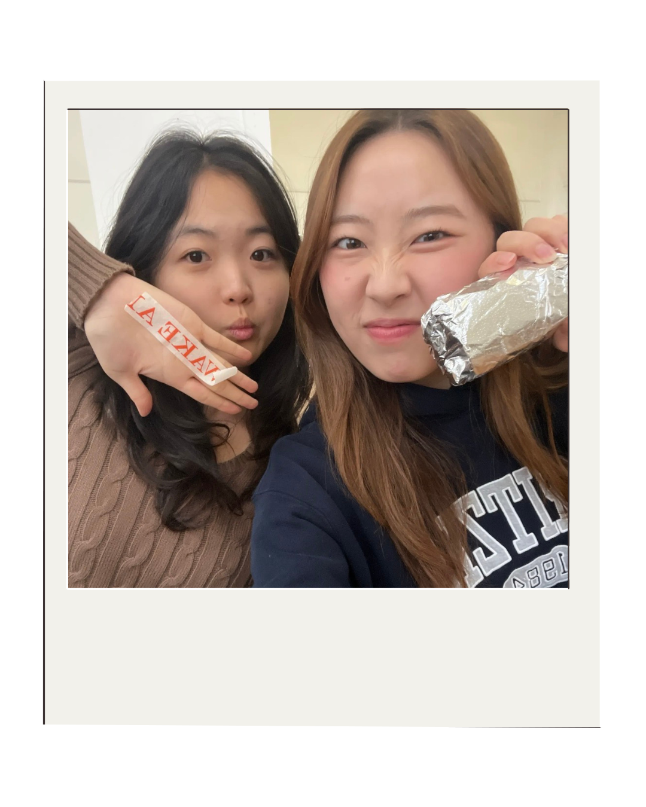
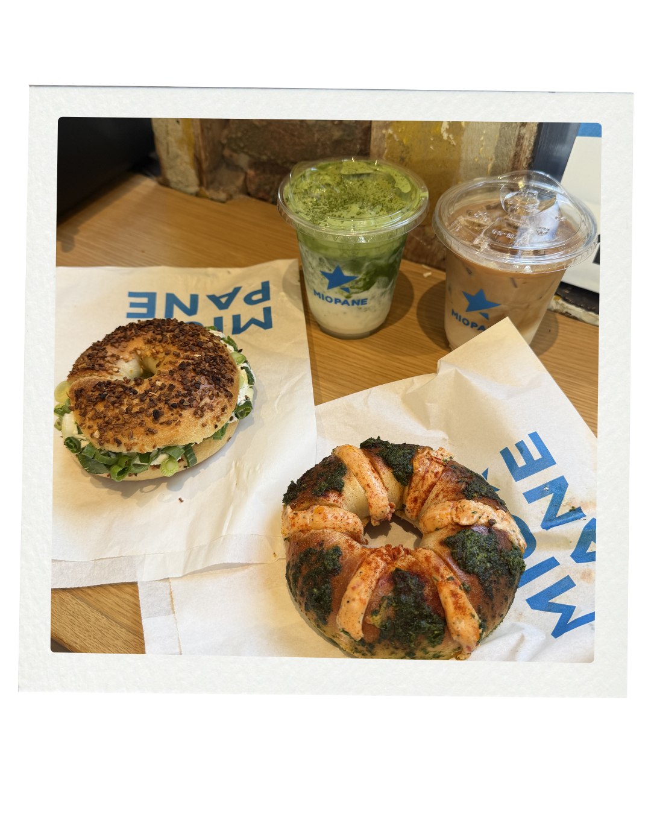
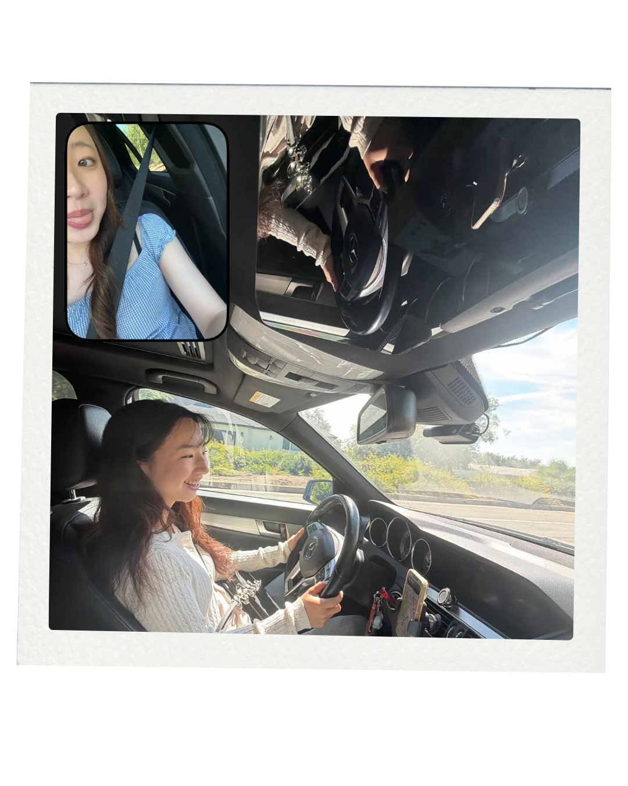

Dear Los Angeles
about
neigborhoods
archives
Pasadena
check out other neighborhoods




Wake and Late
If you're in LA and you haven't had a breakfast burrito yet, Wake and Late is where you should start. The classic comes with tater tots inside which is exactly the right call, and I always add steak. But the real secret is the sauces. Get the cilantro and the chipotle aioli. Both. It makes a difference that is hard to explain until you try it. My friends and I would wake up early just to come here, which says a lot about how good it is. There's no better way to start a morning in Pasadena.
Miopane
Pasadena is my hometown so when a new Taiwanese inspired bagel shop opened up, trying it was never a question. It was the perfect time to try with my friend. It was a very memorable day because my friend drove me! My friend and I went over spring break, waited in line, and it moved quickly enough that we weren't complaining. What sets Miopane apart is the texture. The bagels are fluffier and softer than your typical American bagel, which sounds simple but completely changes the experience. I got the scallion bagel and loved every bite. The coffee and matcha are solid too, making it an easy full order. A really exciting addition to Pasadena.